Tutti i materiali
Cerca un tema o filtra per area e classe. Ogni pagina del materiale porta direttamente al prodotto.
2.289 materiali
Tema
Classe
Cultura – Scheda: testo con spazi vuoti, comprensione all'ascolto e crucipuzzle
Crustacea – Scheda: testo con spazi vuoti, comprensione all'ascolto e crucipuzzle
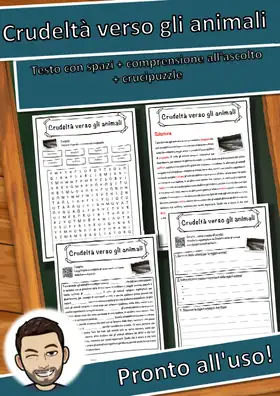
Crudeltà verso gli animali – Scheda: testo con spazi vuoti, comprensione all'ascolto e crucipuzzle
Cromo – Scheda: testo con spazi vuoti, comprensione all'ascolto e crucipuzzle
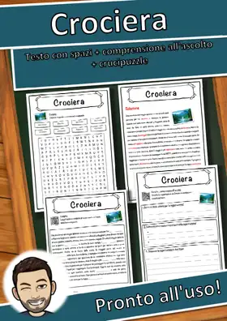
Crociera – Scheda: testo con spazi vuoti, comprensione all'ascolto e crucipuzzle
Cracovia – Scheda: testo con spazi vuoti, comprensione all'ascolto e crucipuzzle
Costituzione – Scheda: testo con spazi vuoti, comprensione all'ascolto e crucipuzzle
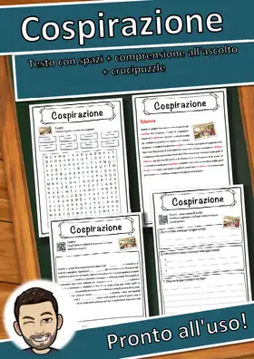
Cospirazione – Scheda: testo con spazi vuoti, comprensione all'ascolto e crucipuzzle
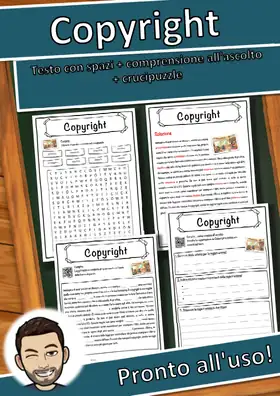
Copyright – Scheda: testo con spazi vuoti, comprensione all'ascolto e crucipuzzle
Coprifuoco – Scheda: testo con spazi vuoti, comprensione all'ascolto e crucipuzzle
Copernicio – Scheda: testo con spazi vuoti, comprensione all'ascolto e crucipuzzle
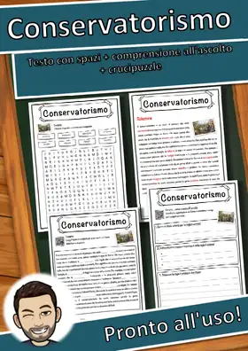
Conservatorismo – Scheda: testo con spazi vuoti, comprensione all'ascolto e crucipuzzle
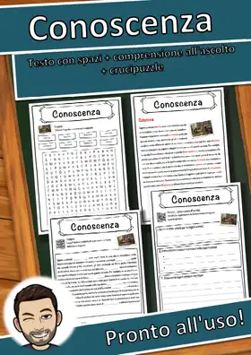
Conoscenza – Scheda: testo con spazi vuoti, comprensione all'ascolto e crucipuzzle
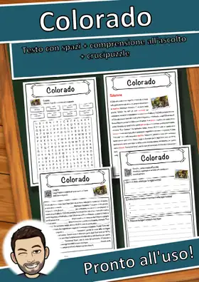
Colorado – Scheda: testo con spazi vuoti, comprensione all'ascolto e crucipuzzle
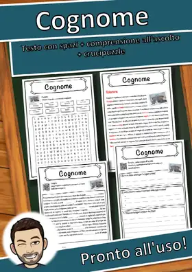
Cognome – Scheda: testo con spazi vuoti, comprensione all'ascolto e crucipuzzle
Civiltà occidentale – Scheda: testo con spazi vuoti, comprensione all'ascolto e crucipuzzle
Città del Messico – Scheda: testo con spazi vuoti, comprensione all'ascolto e crucipuzzle
Circolo polare – Scheda: testo con spazi vuoti, comprensione all'ascolto e crucipuzzle
Cinema muto – Scheda: testo con spazi vuoti, comprensione all'ascolto e crucipuzzle
Ciarlatano – Scheda: testo con spazi vuoti, comprensione all'ascolto e crucipuzzle
Ciad – Scheda: testo con spazi vuoti, comprensione all'ascolto e crucipuzzle
Cheloniidae – Scheda: testo con spazi vuoti, comprensione all'ascolto e crucipuzzle
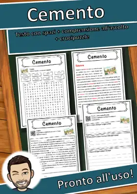
Cemento – Scheda: testo con spazi vuoti, comprensione all'ascolto e crucipuzzle
Cecità – Scheda: testo con spazi vuoti, comprensione all'ascolto e crucipuzzle
Cecenia – Scheda: testo con spazi vuoti, comprensione all'ascolto e crucipuzzle
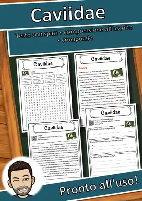
Caviidae – Scheda: testo con spazi vuoti, comprensione all'ascolto e crucipuzzle
Caucciù – Scheda: testo con spazi vuoti, comprensione all'ascolto e crucipuzzle
Catena montuosa – Scheda: testo con spazi vuoti, comprensione all'ascolto e crucipuzzle
Cartolina postale – Scheda: testo con spazi vuoti, comprensione all'ascolto e crucipuzzle
Carovana – Scheda: testo con spazi vuoti, comprensione all'ascolto e crucipuzzle
Canton Uri – Scheda: testo con spazi vuoti, comprensione all'ascolto e crucipuzzle
Canton Turgovia – Scheda: testo con spazi vuoti, comprensione all'ascolto e crucipuzzle
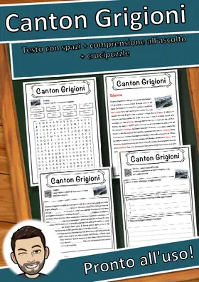
Canton Grigioni – Scheda: testo con spazi vuoti, comprensione all'ascolto e crucipuzzle
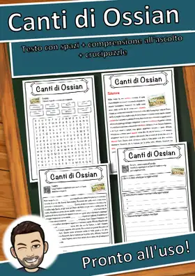
Canti di Ossian – Scheda: testo con spazi vuoti, comprensione all'ascolto e crucipuzzle
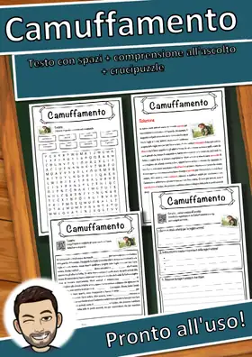
Camuffamento – Scheda: testo con spazi vuoti, comprensione all'ascolto e crucipuzzle
Californio – Scheda: testo con spazi vuoti, comprensione all'ascolto e crucipuzzle
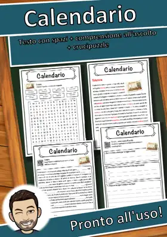
Calendario – Scheda: testo con spazi vuoti, comprensione all'ascolto e crucipuzzle
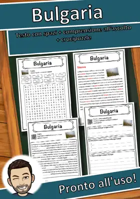
Bulgaria – Scheda: testo con spazi vuoti, comprensione all'ascolto e crucipuzzle
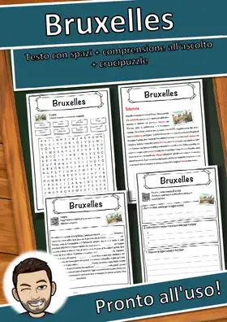
Bruxelles – Scheda: testo con spazi vuoti, comprensione all'ascolto e crucipuzzle
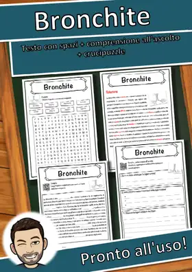
Bronchite – Scheda: testo con spazi vuoti, comprensione all'ascolto e crucipuzzle
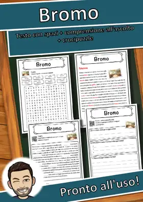
Bromo – Scheda: testo con spazi vuoti, comprensione all'ascolto e crucipuzzle
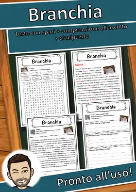
Branchia – Scheda: testo con spazi vuoti, comprensione all'ascolto e crucipuzzle
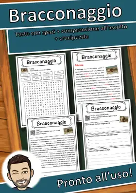
Bracconaggio – Scheda: testo con spazi vuoti, comprensione all'ascolto e crucipuzzle
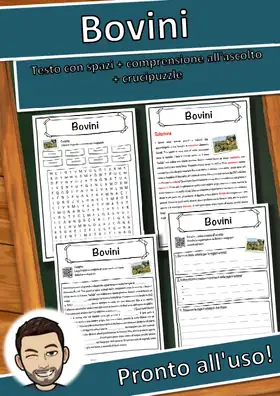
Bovini – Scheda: testo con spazi vuoti, comprensione all'ascolto e crucipuzzle
Bosnia ed Erzegovina – Scheda: testo con spazi vuoti, comprensione all'ascolto e crucipuzzle
Boro – Scheda: testo con spazi vuoti, comprensione all'ascolto e crucipuzzle
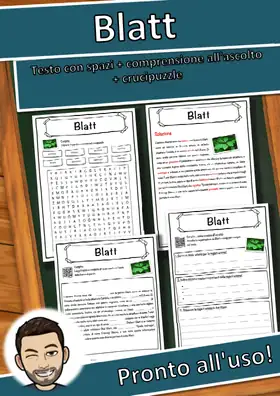
Blatt – Scheda: testo con spazi vuoti, comprensione all'ascolto e crucipuzzle
Bivalvia – Scheda: testo con spazi vuoti, comprensione all'ascolto e crucipuzzle
Nessun materiale trovato: prova con un'altra parola o un altro filtro.